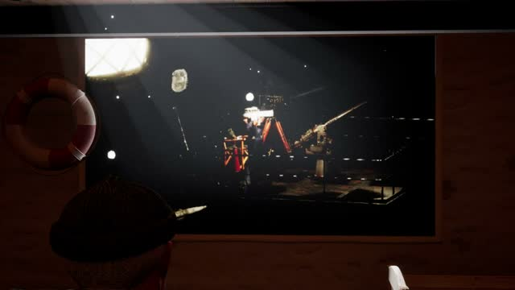
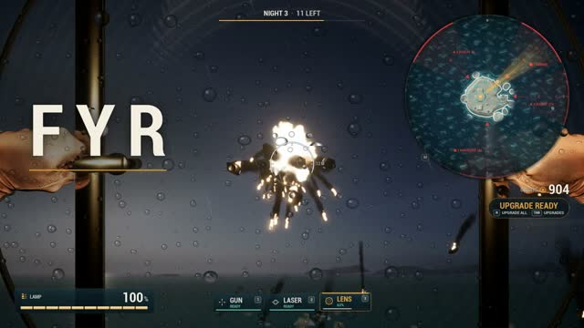
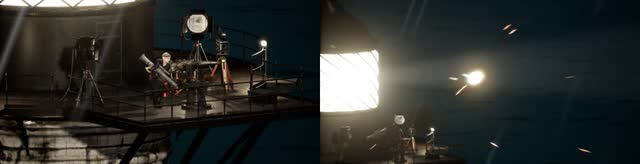

FYR GLEMT
FYR
A lighthouse defence for Epic's 2026 AI MegaJam (theme: Director's Cut), made in four days by one developer directing AI agents
A storm at sea, a lighthouse on a black rock, and saucers that want its lamp out. Plan the night on a chart in the keeper's hut, walk out into the storm, and fight from the tower while your turrets fire on their own.
Stop the night at any moment to change the plan. Lose it, and you play it again.

By the numbers counted Sat 14 Nov, 19:45
- 41,142 lines of C++ game code
- 135 Rodin jobs (3D models and rigs)
- 130 kinds of 3D model in the game
- 596 pictures from the image model
- 275 sound effects, all synthesised
- 50 spoken lines
- 8 pieces of music
- 3 Poly Haven assets (CC0)
- 16 lanes of agents in the rebuild
- 468 commits to the game's repository
How each number was counted
- 41,142 lines of C++ game code
- Non-empty lines in the 80 source files of the game (game/Source), all written by the coding agents during the jam.
- 135 Rodin jobs (3D models and rigs)
- Distinct generation and rigging ids in the job records of the asset folders, the prompt files and the agents' notes, from 12 November 06:00 on. Not every job became a model in the game; several were tries that failed and were sent again.
- 130 kinds of 3D model in the game
- Model folders in the game's content (Content/Fyr/Models): Rodin models, local 3D models and Poly Haven models together.
- 596 pictures from the image model
- Picture files the image model wrote for FYR's own picture jobs (one file a seed) from 12 November 06:00 on. Cut-outs are left out. Most were references for 3D models; none is in the game as it is.
- 275 sound effects, all synthesised
- Sound effect files imported into the game (Content/Fyr/Audio/SFX), each made by our own synthesis code; one kind of sound often has several variants.
- 50 spoken lines
- Voice lines in the game (Content/Fyr/Audio/Voice), each counted once however many takes of it are in; 92 voice files in all.
- 8 pieces of music
- Music files in the game (Content/Fyr/Audio/Music), made with the local music model.
- 3 Poly Haven assets (CC0)
- Poly Haven models and surfaces in the project's CC0 lock, fetched during the jam, that the entry's declaration lists.
- 16 lanes of agents in the rebuild
- Lanes of the rebuild that have a written brief (BRIEF.md, and BRIEF-2.md for a lane's second round), each worked by one Claude Code agent at a time, most in their own git worktree; the integrator, the verifier and this log are lanes too. A lane whose agent was restarted counts once.
- 468 commits to the game's repository
- Commits in the game's own (private) repository; its history shows when each thing was made.
Newest pictures from the running game

The video's last shot but one: the keeper in his chair watches the drone's film of his own rocket on the hut's wall.
From the running game Sat 14 Nov, 20:35

The pause in the video: time stopped and the keeper's tablet up, a Flak Gun picked, its arc of fire over the night's arrows. A frame from the recording itself, without the video's caption.
From the running game Sat 14 Nov, 20:35

The video's first second: the great lens burns a carrier on the third night and it blows apart, the title over it. The lamp bar, the stations and the live map are the game's own screen.
From the running game Sat 14 Nov, 20:35

The drone's shot in a run at 13:44, two moments: the keeper on the gallery holding the launcher low across his hips, before the heave; and a moment after the shot, the rocket's flare out over the sea with sparks behind it, the keeper small on the gallery under the lit lamp. Frames from the run's contact sheet, at its small size.
From the running game Sat 14 Nov, 14:35

Seen from a camera beside the doorstep, two moments of the generated walk a quarter of a second apart: one boot comes down onto the stone tread and stands on it, clear of the riser, while the other leg is in the air. Run at 13:52.
From the running game Sat 14 Nov, 14:35

Dawn, from the camera the developer watched: the keeper steps up onto his doorstep, his body rising with the step, the door open into the dark room. The lamps on their posts and the window's glow are the hut's own lights. One frame of a frame-by-frame run at 02:41.
From the running game Sat 14 Nov, 14:35


The gallery: all 62 pictures in order, with before and after
Latest from the log
- 2 failures The gameplay video, and the faults its takes caught Saturday from 14:30 to 20:35. The keeper got an older voice and an upright walk, the plan shows a turret's arc of fire before it is bought, the hut and the rock answer when touched, and the screening plays the film's…
-
2 failures
Watching the ending, and a keeper who moves like a tired old man
Saturday from 01:30 to 14:30. The game can now film itself frame by frame with its sound in exact sync, so the developer watched the ending as a video before anyone played it. He liked it and saw the keeper glide…
-
 1 failure
The first ending: a drone films the keeper, and he watches it at home
Day three begins after midnight with the game's first ending, the developer's own idea, built between 23:00 and 01:14. A camera drone films the keeper from the side as he fires the rocket that finishes the first…
1 failure
The first ending: a drone films the keeper, and he watches it at home
Day three begins after midnight with the game's first ending, the developer's own idea, built between 23:00 and 01:14. A camera drone films the keeper from the side as he fires the rocket that finishes the first…
Look inside
- How it is made13 toolsWho does what, every tool with its licence, and what was prepared before the jam.
- The log11 entriesDay by day and hour by hour: what was built, with which tool and prompt.
- Gallery62 picturesEvery picture in order, generated ones with their prompts, with before and after.
- What went wrong19 failuresNewest: Four faults that every automated check had passed